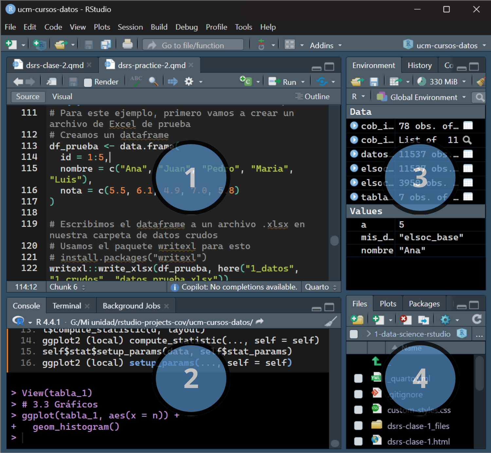
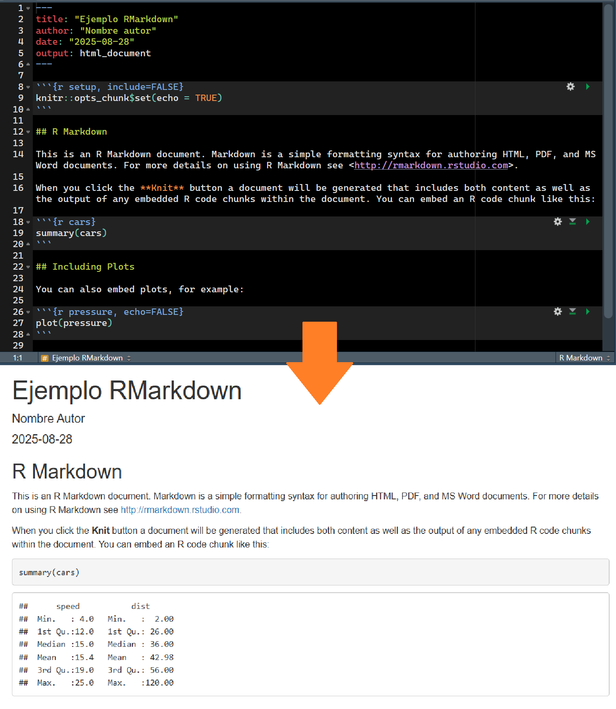
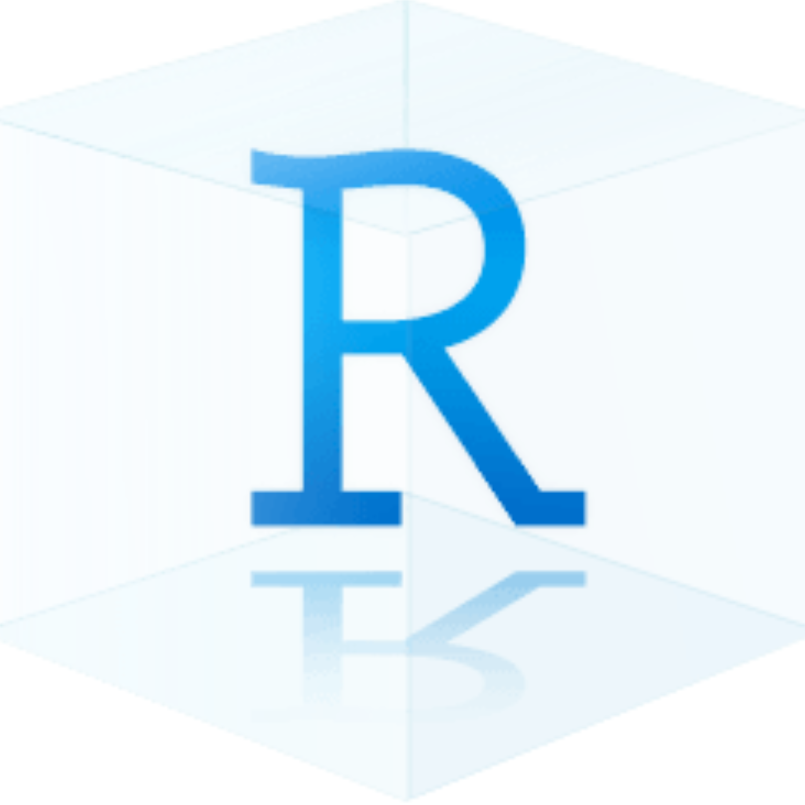

Sesión II: Introducción a R y RStudio
Hoy sentaremos las bases de cómo vamos a trabajar en este curso.
tidyverse, un ecosistema de paquetes que facilitan la ciencia de datos.RStudio está organizado en paneles. La configuración más común es:
Editor de Scripts (Arriba-Izquierda): Aquí escribes tu código (.R, .Rmd, .qmd). Es tu “hoja en blanco”.
Consola (Abajo-Izquierda): Aquí es donde R ejecuta el código. Ves los resultados, errores y mensajes. Es el “motor” de R.
Entorno/Historial (Arriba-Derecha):
Archivos/Gráficos/Paquetes (Abajo-Derecha):

Una distinción crucial para un trabajo ordenado y reproducible:
Consola ➡️ - Interactiva y Efímera.
Script 📝 - Permanente y Reproducible.
.R) donde guardas tu análisis completo..R) Ctrl+Shift+Enter (en .Rmd o .qmd)Regla de oro: Si es un código que podrías necesitar de nuevo, ¡escríbelo en un script!
En R, todo es un objeto. Piensa en ellos como contenedores que guardan información. En este sentido, se dice que R es un lenguaje de programación orientado a objetos
<- (atajo de teclado: Alt + -).snake_case (nombres_separados_por_guion_bajo).Las funciones hacen cosas. Toman uno o más objetos como entrada (llamados argumentos) y producen un resultado sobre ese objeto. Siempre se escriben con paréntesis al final: nombre_funcion().
Estructura típica de una función
completa:
funcion(argumento1 = valor1, argumento2 = valor2)simplificada:funcion(valor1, valor2)
Algunas funciones
Para saber qué hace una función y qué argumentos necesita, usa ?nombre_funcion en la consola
Los paquetes (o librerías) son colecciones de funciones, datos y documentación agrupados por un propósito común.
tidyverse es una colección de paquetes diseñados para la ciencia de datos (ggplot2, dplyr, readr, etc.).Para usar un paquete, debes:
install.packages("nombre_del_paquete")library(nombre_del_paquete)Error común
install.packages() el argumento va entre comillaslibrary() el argumento no lleva comillasUn script de análisis bien estructurado es fácil de leer y reutilizar. Una estructura recomendada es la siguiente:
# =============================================================================
# 1. CARGAR LIBRERÍAS Y BASES DE DATOS
# =============================================================================
# 1.1 Cargar paquetes
library(tidyverse)
# ...otros paquetes
# 1.2 Cargar datos
load("../0-datos/elsoc_base.RData")
# =============================================================================
# 2. PROCESAMIENTO Y LIMPIEZA
# =============================================================================
# 2.1 Renombrar variables
datos_limpios <- elsoc_base %>%
# nombre_nuevo = nombre_antiguo
rename(id_encuesta = idencuesta) %>%
dplyr::select(id_encuesta, ola) %>%
drop_na()
# 2.2 Recodificar valores
# ...
# =============================================================================
# 3. ANÁLISIS DE DATOS
# =============================================================================
# 3.1 Análisis descriptivo
summary(datos_limpios$ola)
# 3.2 Tablas
tabla_1 <- datos_limpios %>%
count(ola)
# 3.3 Gráficos
ggplot(tabla_1, aes(x = n)) +
geom_histogram().Rmd) y Quarto (.qmd)?Son formatos de archivo que permiten combinar texto plano, código de R y los resultados (output) de ese código -como tablas y gráficos- en un único documento. Piensa en ellos como un “cuaderno de laboratorio digital”. 🔬
Componentes clave:
html, pdf, docx).```{r}) que se ejecutan al “renderizar” el documento.Flujo de trabajo:
.Rmd o .qmd.
En sociología, la reproducibilidad y la transparencia son fundamentales. Un análisis de datos no es solo el resultado final, sino un proceso.
Un flujo de trabajo estandarizado nos ayuda a:
C:/Users/Mi_Nombre/Documentos/...).Un flujo de trabajo estructurado y consistente nos permite:
Un Proyecto de RStudio es la base de nuestro flujo de trabajo. Es un archivo (.Rproj) que “vive” en la carpeta principal de tu análisis y la convierte en el directorio de trabajo por defecto.
Al abrir un archivo .Rproj, RStudio automáticamente:
.Rproj.Esto significa que todas las rutas a nuestros archivos (datos, imágenes, etc.) serán relativas a la carpeta del proyecto.
¡Adiós al setwd()! Usar RProjects es la práctica recomendada y nos ahorra muchos dolores de cabeza.

setwd()!File > New Project...New Directory para una carpeta nueva o Existing Directory si ya tienes una carpeta para tu análisis.New Project.analisis_desercion_escolar) y elige dónde guardarlo.Una buena práctica es organizar los proyectos con una estructura de carpetas clara. Para este curso. Una estructura típica es:
mi_proyecto/
├── mi_proyecto.Rproj
├── 1_datos
│ ├── 1_crudos (datos originales, nunca los modifiques)
│ └── 2_procesados (datos limpios o transformados)
├── 2_codigo
│ ├── 01_procesamiento_datos.R
│ ├── 02_analisis_descriptivo.R
│ └── 03_modelos.R
├── 3_resultados
│ ├── tablas
│ └── graficos
└── 4_documentos (reportes, artículos, etc.)Los datos pueden venir en múltiples formatos. Los más comunes son:
.csv (Comma-Separated Values).txt (Tab-delimited, etc.).xlsx o .xls (Microsoft Excel).sav (SPSS).dta (Stata)El Tidyverse ofrece paquetes especializados y optimizados para cada tipo de dato.
| Paquete | Función principal | Formato de archivo |
|---|---|---|
{readr} |
read_csv() |
.csv y otros texto plano |
{readxl} |
read_excel() |
.xlsx, .xls |
{haven} |
read_sav(), read_dta() |
.sav, .dta, etc. |
Ventajas:
tibbles, un formato de data frame mejorado.datos, codigo, resultados).{readr}, {readxl} y {haven} para cargar tus datos de manera eficiente y consistente.Sesión III: Transformación de datos con {dplyr}
select(): seleccionar columnas.filter(): filtrar filas.mutate(): crear o modificar columnas.arrange(): ordenar filas.summarise() y group_by(): resumir datos.